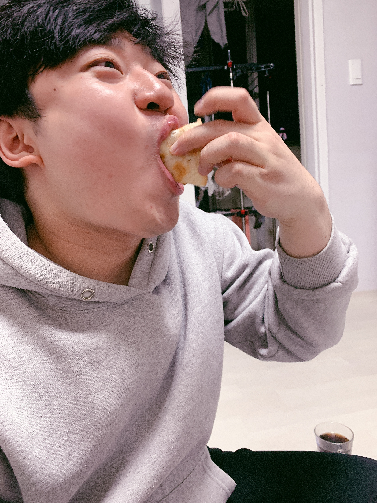

Dongje : stop eating pork cutlet.
Mindal : Chae Soo-min, a man of the Yellow Sea
Sumin : Roldlerwaaaaaa
Hak Yong : Ha... my cheeks are going to explode.
Kyung Mo : Soomin, see you in life.
Jaeha : 1. Soomin, let's win. Let's lighten up. 2. I wish Sumin could lose weight. Hehe
Minyoung teacher : How lovely, Sumini.
Eun-seo Goodbye.~~
Gyeongho : You study
Ji Yeon : English hard and interpret it all. Su Min Ah You have to go to the army to be a real man. You must feel really bad. Have a safe trip! Please contact me when you use your cell phone.